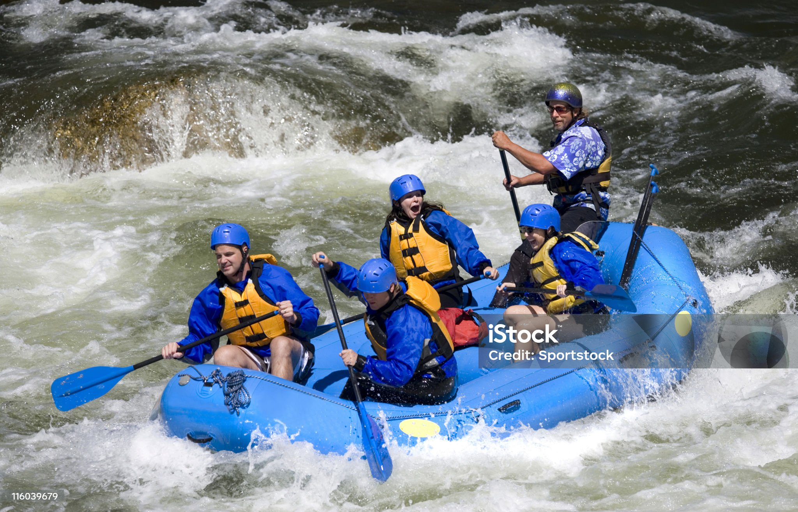
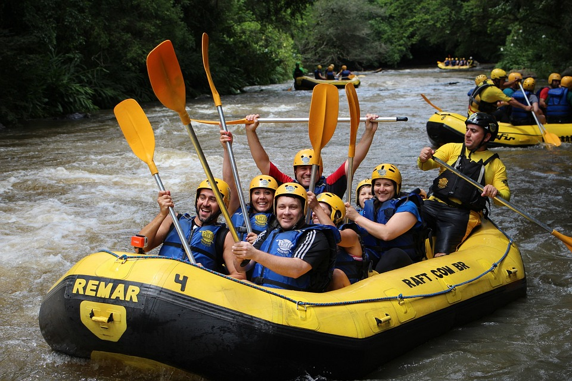
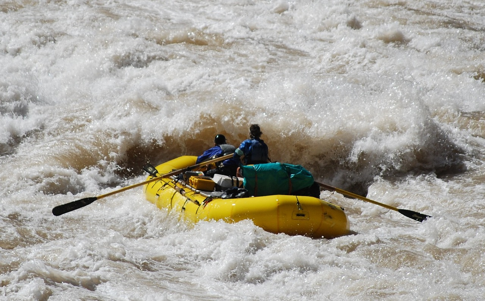
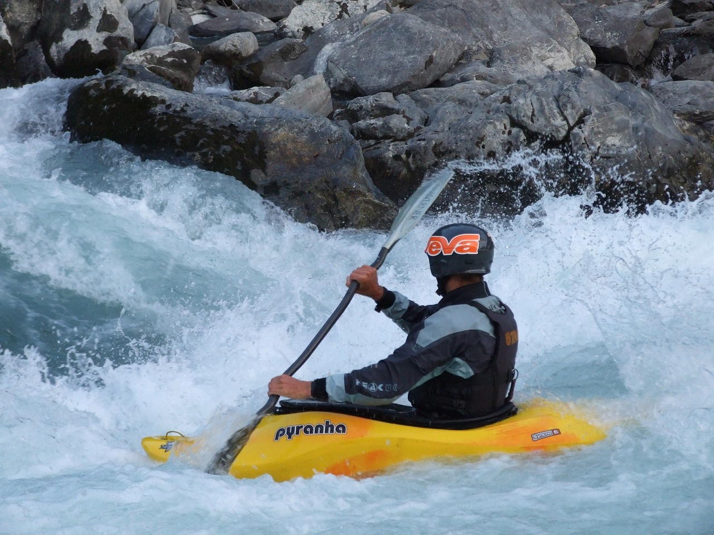

Rivers!
Whether it's a glassy smooth stretch reflecting a vibrant sunrise or a spunky cascade tumbling over moss-covered rocks, there's a perfect river adventure waiting for you. Glide through tranquil canyons or paddle your way over exhilarating rapids. Our rafting trips offer a choose-your-chill experience on some of the most stunning waterways around.
Family friendly route
Imagine a lazy summer afternoon spent floating down a crystal-clear river. Gentle currents whisk you along, sunlight dappling through leaves overhead. This isn't a heart-pounding thrill ride – it's a relaxing adventure perfect for the whole family! Our kid-friendly river floats are on calm stretches of water, perfect for splashing, swimming, and spotting wildlife along the banks. It's a chance to unwind, reconnect with nature, and create memories that will last a lifetime.
options for average goers
Carve your own path down a river of adventure! This thrilling ride is ideal for first-timers and seasoned paddlers alike. Expect a healthy mix of calm stretches to soak in the scenery and exciting rapids to get your heart pumping. You'll navigate splashy spillovers and maneuver around playful rollers, all under the watchful eye of our experienced guides. It's a chance to challenge yourself, cool off with refreshing splashes, and experience the camaraderie of conquering a river together.
experienced options
Unleash your inner daredevil on a river that pushes your limits! This adrenaline-pumping adventure is designed for experienced rafters seeking an epic challenge. Hold on tight as you navigate heart-stopping chutes, weave through technical rapids, and power over exhilarating drops. This is no ride for the faint of heart – it's a test of your paddling skills, teamwork, and pure grit. Get ready for an unforgettable day of conquering whitewater and bragging rights that will last a lifetime.
